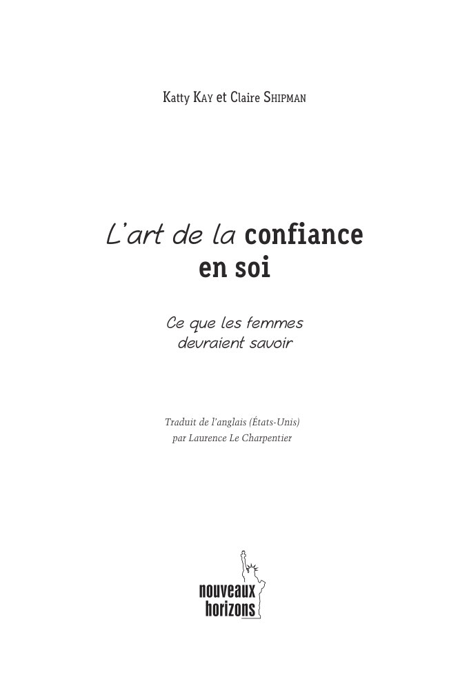

L’Art de la confiance en soi





Carte d’identité
- Auteur
- Katty Kay et Claire Shipman
- Genre
- Vie et société
- Sous-genre
- Développement personnel
- Éditeur
- Guy Trédaniel / Nouveaux Horizons
- Parution de l’édition
- 2017
- Première parution
- 2014
- ISBN Nouveaux Horizons
- 978-2-35745-442-2
- Autres ISBN
- 9782357454439 (EPUB Nouveaux Horizons) · 9782813214614 (papier Guy Trédaniel)
- Langue de l’édition
- Français
- Fichier du site
- Extrait PDF · 23 pages
L’extrait de 23 pages contient le sommaire et l’introduction. Les repères s’appuient aussi sur la notice de l’éditeur.
Traduction de Laurence Le Charpentier.
 Résumé du livreL’essentiel en quelques lignes
Résumé du livreL’essentiel en quelques lignes
Katty Kay et Claire Shipman se demandent pourquoi des femmes compétentes peuvent hésiter à prendre la parole ou à se lancer. Elles mêlent récits, recherches et situations de travail pour explorer le rôle du contexte, de l’éducation et de l’expérience. L’extrait du site contient l’introduction et le sommaire.
 Repères d’après le sommaire8 entrées
Repères d’après le sommaire8 entrées
Repères rédigés d’après le sommaire et la présentation de l’éditeur.
-
01 Au-delà de la compétence
Les autrices posent la question de l’écart entre savoir faire quelque chose et oser le montrer. Ce premier chapitre s’intéresse à ses conséquences pour les femmes au travail.
-
02 Passer à l’action
Le sommaire annonce une réflexion sur l’hésitation avant de se lancer. La présentation de l’éditeur met en avant l’intérêt de prendre des risques mesurés.
-
03 Ce qui prépare à l’assurance
Le chapitre annoncé s’intéresse à la part des dispositions et du contexte dans la confiance. L’éditeur présente cette dernière comme une qualité qui peut se développer.
-
04 Les obstacles liés au regard social
Le livre examine les attentes qui pèsent sur les femmes quand elles s’affirment. Le sommaire situe cette question parmi les causes du doute.
-
05 L’apprentissage dans la famille
Cette partie annoncée s’intéresse à l’éducation. Elle interroge ce que les enfants apprennent en matière d’audace, de prudence et de réaction à l’erreur.
-
06 Faire une place à l’échec
Les autrices lient le développement de la confiance à la pratique. Le chapitre annoncé revient sur les habitudes qui aident à essayer, échouer et recommencer.
-
07 Transmettre cette confiance
Le sommaire annonce un passage des changements personnels à ce que l’on peut transmettre. Il invite à regarder comment son entourage peut à son tour être encouragé.
-
08 Ce que disent les recherches et l’expérience
Le dernier chapitre annoncé rapproche les résultats de recherche et les pratiques présentées au fil du livre. Il revient sur ce qui aide à transformer une intention en action.
Les fils du livre

Les étoiles venues d’ailleurs
Goodreads
Œuvre originale · PDF extraitLire les avis sur Goodreads ↗Relevé du 11 novembre 2026
Mon carnet de lecture
Mes étoiles
0 critique
Ma critique sur ce livre ↗